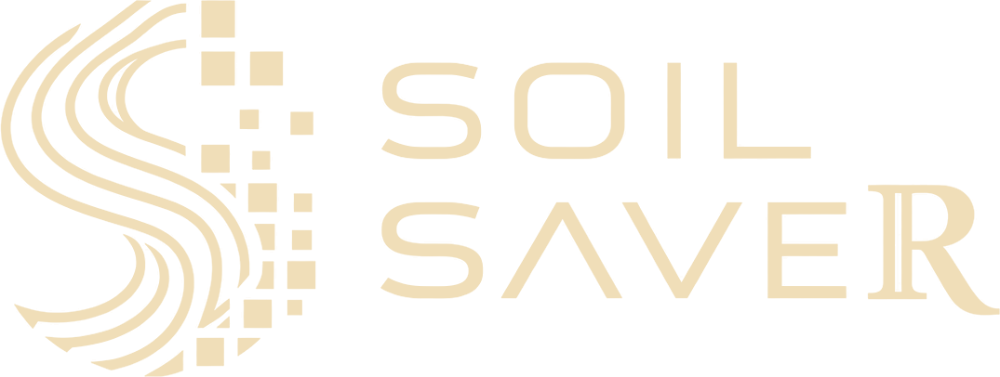
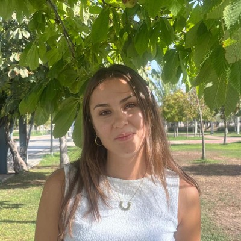
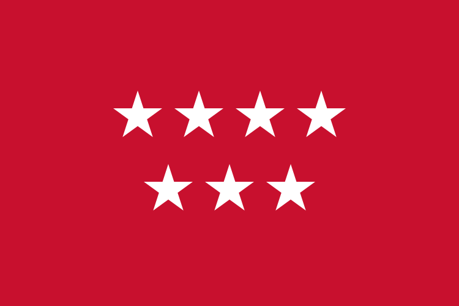

La erosión es visible desde el espacio.
Los datos para estudiarla, aún no.
La erosión no es solo un problema ambiental
Erosion is not just an environmental problem
Un gap en los datos que limita lo que podemos aprender.
A data gap that limits what we can learn.
Los métodos de deep learning para detección de erosión han mostrado resultados prometedores, pero la ausencia de datos públicos dificulta comparar, reproducir o mejorar esos modelos: de 113 artículos revisados, solo 2 comparten datos accesibles, y ambos cubren una única región y un único sensor. SoilSaveR es un intento de empezar a cerrar esa brecha, proponiendo una metodología para generar un dataset etiquetado, público, multimodal y multi-región para detección de erosión desde imágenes satelitales. La metodología combina modelado determinista (RUSLE + índices topográficos del DEM) para acotar automáticamente las zonas candidatas, con verificación visual humana sobre imágenes Sentinel-2, buscando que las etiquetas estén a la vez físicamente fundamentadas y visualmente confirmadas.
integradas
estudio activas
modelos semi-supervisados
reproducible
Así se ve la erosión desde el espacio
This is what erosion looks like from space
Patones, Madrid · El mismo territorio en 1956 y 2025. Desliza para revelar los cambios.
Cómo construimos el dataset
How we build the dataset
Pipeline híbrido multimodal
Multimodal Hybrid Pipeline
- ▸ Modelado determinista (RUSLE + DEM) calcula susceptibilidad a la erosión y genera una máscara de zonas candidatas.
- ▸ Deterministic modeling (RUSLE + DEM) computes erosion susceptibility and generates a candidate-zone mask.
- ▸ Índices topográficos (TWI, SPI, slope-area) refinan las zonas candidatas con criterios físicamente fundamentados.
- ▸ Topographic indices (TWI, SPI, slope-area) refine candidate zones using physically grounded criteria.
- ▸ Anotación humana guiada — los anotadores confirman presencia real de erosión solo dentro de las zonas candidatas. Reducción de esfuerzo: 50–80%.
- ▸ Guided human annotation — annotators confirm actual erosion presence only within candidate zones. Effort reduction: 50–80%.
- ▸ Objetivos de etiquetado: cárcavas >10 m y zonas de erosión laminar, en múltiples regiones.
- ▸ Labeling targets: gullies >10 m and sheet erosion zones, across multiple regions.
- ▸ Publicación abierta: protocolo de etiquetado, métricas de acuerdo entre anotadores y herramientas, todo liberado públicamente.
- ▸ Open release: labeling protocol, inter-annotator agreement metrics and tools, all released publicly.
Parte del stack de datos y modelos
Some of the Data & model stack
- ▸ Sentinel-2 (10 m óptico) — base de etiquetado visual e imagen multiespectral de alta resolución.
- ▸ Sentinel-2 (10 m optical) — visual labeling base and high-resolution multispectral imagery.
- ▸ ALOS PALSAR DEM (12,5 m) — modelo digital de elevación para RUSLE y cálculo de índices topográficos.
- ▸ ALOS PALSAR DEM (12.5 m) — digital elevation model for RUSLE and topographic index computation.
- ▸ Sentinel-1 SAR (10 m, opcional) — modalidad de radar para enriquecer el dataset multimodal.
- ▸ Sentinel-1 SAR (10 m, optional) — radar modality to enrich the multi-modal dataset.
- ▸ Google Earth Engine — acceso y procesamiento de todos los datos satelitales en la nube.
- ▸ Google Earth Engine — cloud-based access and processing of all satellite data.
- ▸ Arquitecturas objetivo: DeepLabV3+, U-Net, SAM — los modelos de segmentación que el dataset habilita por primera vez de forma reproducible.
- ▸ Target architectures: DeepLabV3+, U-Net, SAM — the segmentation models the dataset enables reproducibly for the first time.
¿Por qué importa?
Why does it matter?
- Cada modelo de deep learning publicado para detección de erosión fue entrenado con datos privados e irreproducibles.
- El estándar dominante, RUSLE, predice susceptibilidad, no presencia real, y sus predicciones se desvían de mediciones en campo por factores de 0,04× a 8×; solo el 41% de los estudios validan sus resultados.
- La detección por deep learning de cárcavas, erosión en masa y erosión laminar requiere etiquetas confirmadas visualmente, no predicciones deterministas.
- SoilSaveR es la primera infraestructura de datos que hace posible entrenar y comparar modelos de segmentación de erosión de forma abierta y reproducible, combinando 10 fuentes de datos distintas.
Quién construye SoilSaveR
Who builds SoilSaveR
El SoilSaveR Research Group nació para cerrar una brecha crítica: la ausencia de datos públicos para detectar erosión y degradación del suelo. Reunimos a investigadores de Darwin Geospatial, la Universidad Johns Hopkins y la Universidad Rey Juan Carlos para construir el primer dataset abierto, multimodal y multi-región.


Dr. Víctor M. Tenorio
Líder de Investigación
Profesor Ayudante Doctor en la Universidad Rey Juan Carlos y líder de investigación del grupo. Su tesis «Processing and Learning over Irregular Domains» recibió el Premio a la Mejor Tesis Doctoral 2026 del capítulo IEEE Spain Signal Processing and Communications. Investiga procesamiento de señales sobre grafos y aprendizaje automático.

Mario García Peces
Científico de Recursos Naturales
Cofundador e ingeniero geoespacial de Darwin Geospatial. Especialista en SIG, teledetección, análisis espacial y cartografía, convierte los datos espaciales en mapas y herramientas para entender paisajes y sistemas naturales. Ha trabajado con el OAPN en el Parque Nacional de Sierra Nevada.

Irene Molero Cuenca
Investigadora Predoctoral
Científica de datos especializada en aprendizaje automático aplicado a datos ambientales. En su Doctorado Industrial en Darwin desarrolla los modelos de IA de SoilSaveR, construyendo el dataset abierto de erosión del suelo y validándolo con verdad de campo.


Sandupal Dutta
Investigador
Investigador doctoral (Graduate Fellow) en la Universidad Johns Hopkins y ex oficial de la Armada de la India. Científico de datos ambientales especializado en meteorología, oceanografía, modelización numérica y aprendizaje automático. Formó parte del equipo SoilSentinel en el reto NASA Space-to-Soil.


Javier Velázquez Saornil
Investigador Principal Senior
Investigador Principal Senior en la Universidad Católica de Ávila, especialista en ecología del paisaje, cartografía ambiental y conservación del territorio. Aporta al grupo la perspectiva de análisis espacial, planificación ambiental y áreas protegidas.

1er Premio a Mejor Propuesta de Investigación · Doctorados Industriales, Comunidad de Madrid
1st Research Proposal Award · Industrial Doctorates, Comunidad de Madrid
Mejor propuesta de entre las 116 candidaturas a Doctorado Industrial de la Comunidad de Madrid 2025, en todas las categorías.
Best proposal out of 116 industrial PhD applications to the Comunidad de Madrid 2025 call, across all categories.
Darwin Geospatial + URJC · Septiembre 2026
Darwin Geospatial + URJC · September 2026

2º Premio · NASA Space to Soil Challenge
2nd Award · NASA Space to Soil Challenge
Junio 2026
June 2026
Ver en la web oficial de la NASA →¿Quieres colaborar o usar el dataset?
Want to collaborate or use the dataset?
Buscamos colaboraciones de investigación, anotadores expertos y equipos que quieran entrenar o validar modelos de detección de erosión con datos abiertos y reproducibles.
Contáctanos →